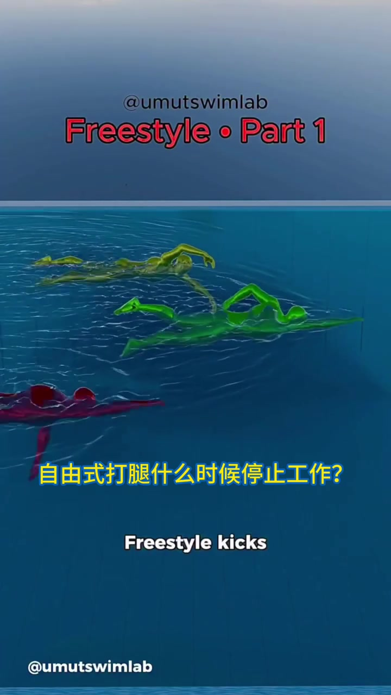
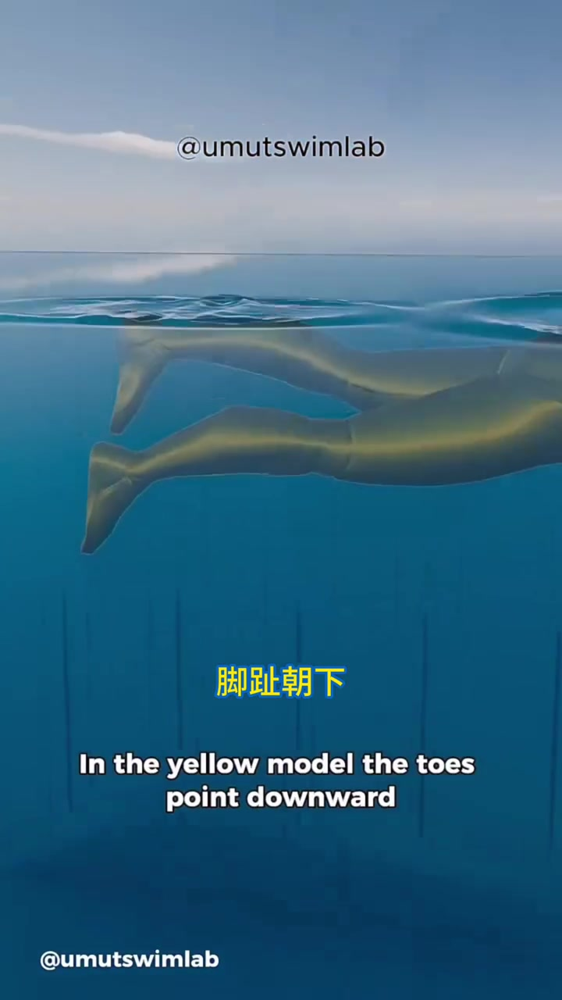
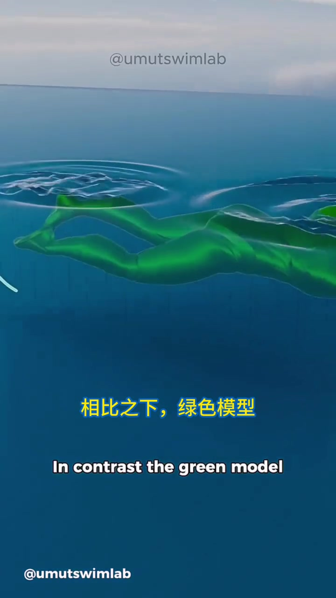
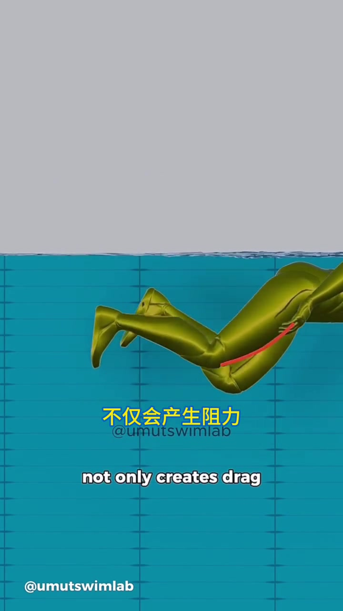
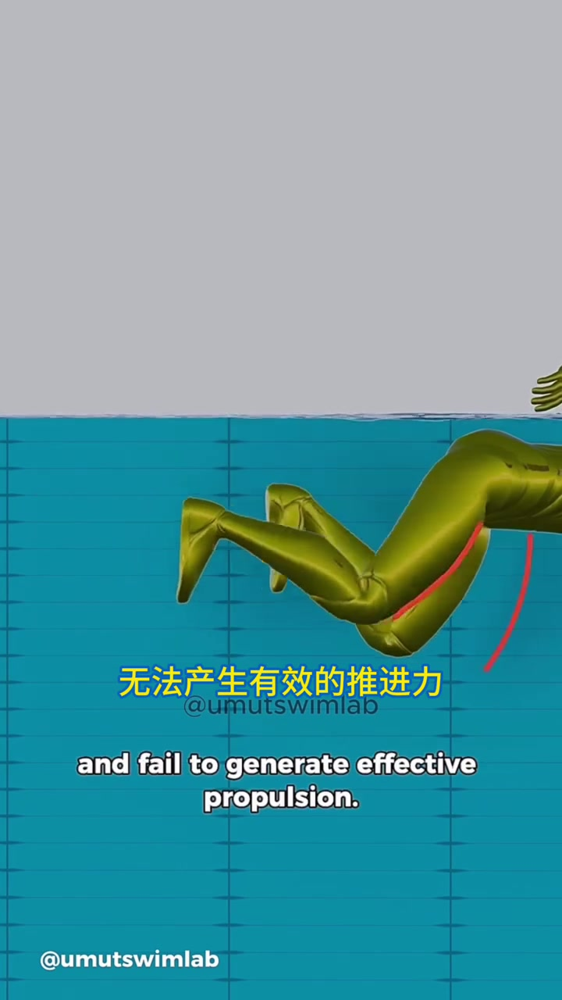
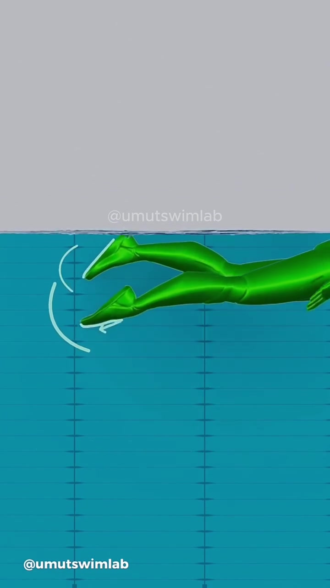
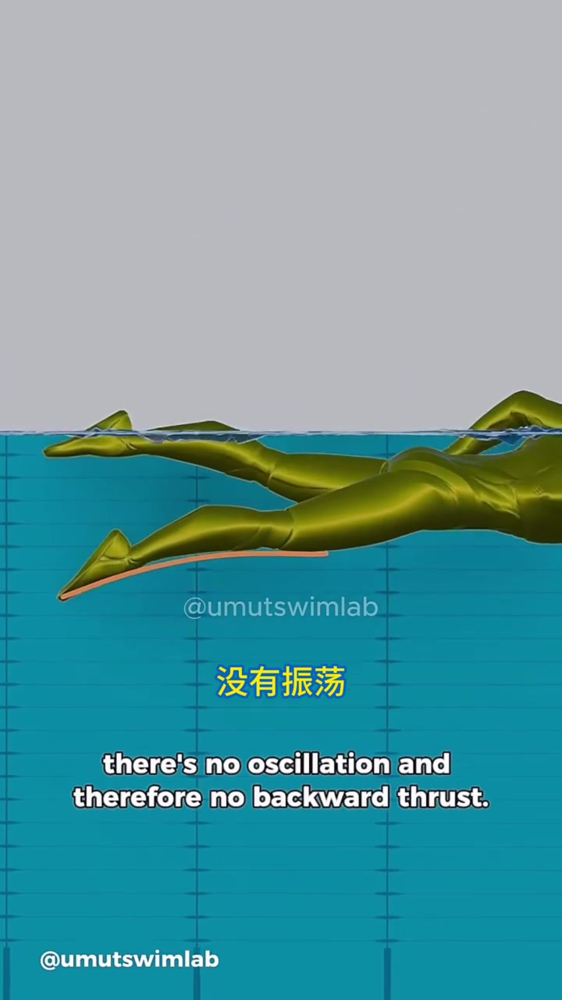
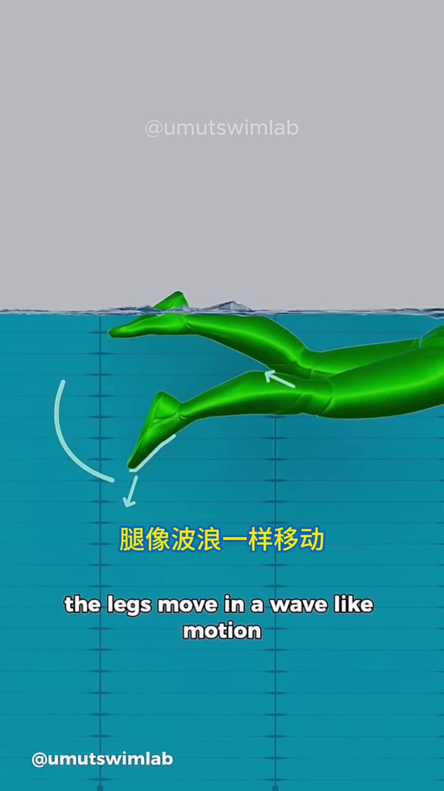

开场：自由式打腿什么时候停止工作？
竖屏标题叠在三色半透明 3D 泳者上：红字「Freestyle · Part 1」，中文黄字提问「自由式打腿什么时候停止工作？」，英文旁白开场「Free style kicks / When do they stop working?」。分享者说明动画来自 UmutSwimLab，用来把打腿「走水」原理讲清楚——不是「打就好了」，而是为什么要鞭打、怎样才有向后推进。
说明：口播为英语；Whisper 在 --language Chinese 设定下仍输出了连贯英文分段（与画面英文字幕一致）。画面另有中文大字叠字。下文叙述结合中英字幕；完整转录区保留 Whisper 原始分段。

黄模对照：脚趾朝下，竖直切水
镜头切到黄色下肢模型。叠字「脚趾朝下」，旁白说明脚趾指向下方、竖直切开水面。后果立刻点明：挡掉向后推进，还额外制造阻力。
「In the yellow model, the toes point downward and cut through the water vertically. This prevents backward propulsion and creates drag.」

绿模对照：脚背向下推、脚底向上推
绿色全身模型侧视入镜，叠字「相比之下，绿色模型」。正确打腿不是脚尖「切」水，而是用脚背把水往下推、用脚底把水往上推，让脚成为导流面，把水流顺着脚引导出去。
「In contrast, the green model uses the top of the foot to push water downward and the sole to push upward… guide the flow of water effectively with the feet.」

两种失效：膝盖抱胸，以及脚底硬踹
画面回到偏金色错误模型。先演示把膝盖往胸口拉：红线标在大腿/膝后，叠字「不仅会产生阻力」——不仅拖阻力，还可能把推力推到错误方向。接着脚底猛踹、突然刺穿水面：叠字「无法产生有效的推进力」。
「Pulling the knees toward the chest not only creates drag but can also generate thrust in the wrong direction. Strong kicks with the sole… pierce the water abruptly and fail to generate effective propulsion.」


绿模正解：微屈膝控向，水从膝传到脚尖再向后
绿模下肢再次特写：膝略弯，脚周有浅蓝弧线示意轨迹。旁白说微屈膝是为了方向控制；水从膝盖一路引导到脚趾，再向后推出去——这就是「走水」而不是「砸水」。
「The green model slightly bends the knees for directional control. Water is guided gradually from the knee to the toes and then pushed backward.」

僵硬膝踝：没有振荡，就没有向后推力
错误侧再强调关节状态：膝和踝保持僵硬时「没有振荡」，因此没有向后推力。手臂或许还能扫水，腿却只是下压再松开——上下拍，而不是整条链在波动。
「In the incorrect technique, since the knees and ankles remain stiff, there's no oscillation and therefore no backward thrust. The arms may sweep… but the legs simply press down and release.」

收束：松弛膝踝，腿像旗子在风中波浪前进
绿模收尾：膝踝放松，腿做波浪式运动，像旗子在风中飘动；推力沿整条腿的长度、靠这种振荡产生。叠字「腿像波浪一样移动」。53 秒动画从「何时失效」问到「整腿振荡」，把打腿走水收成一条可对照的体感链。
「In the green model, the knees and ankles are relaxed. The legs move in a wave-like motion, similar to a flag fluttering in the wind. Thrust is generated along the entire length of the leg through this oscillation.」
